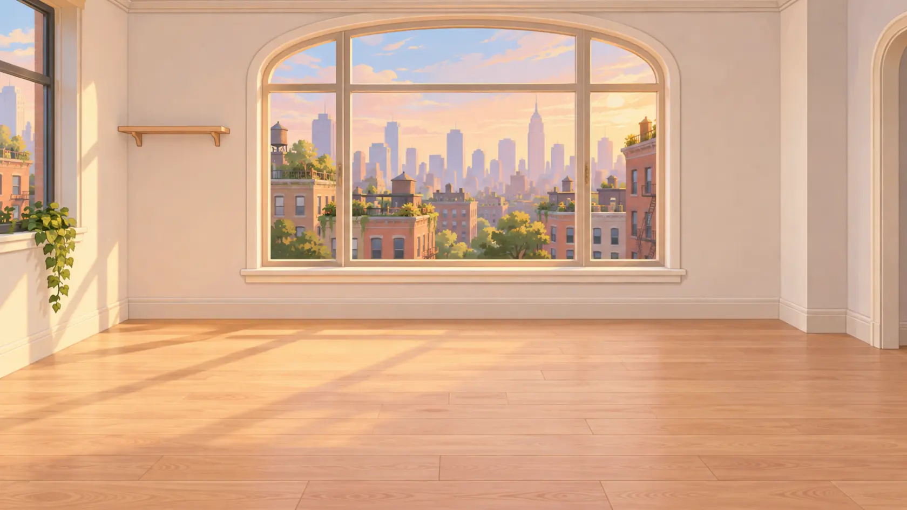
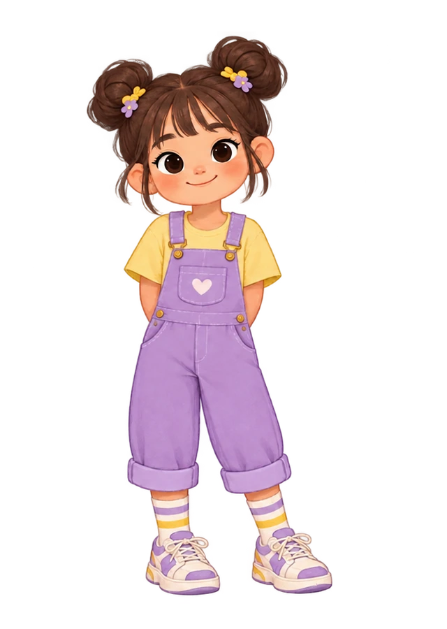
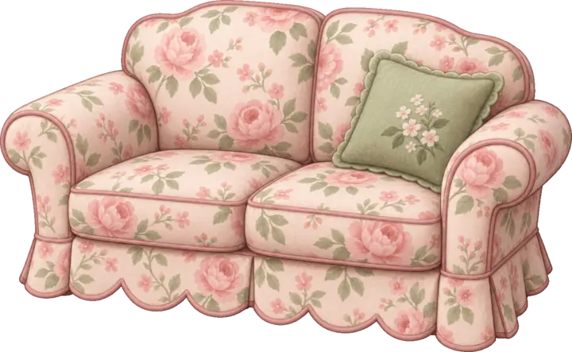

Using ChatGPT Free
- Open ChatGPT with an adult.
- Paste one version prompt.
- Ask for the complete contents of each file.
- Copy each answer into the matching file in VS Code.
- Save and test before continuing.
A make-it-yourself room game
Build your own Kucci Tucci room design game from an empty folder. Use simple everyday words to create a room, movable furniture, characters, pets, sounds, and anything else you imagine. No paid software or paid AI plan is required.



Step 1: Choose a free helper
Use Visual Studio Code for the game files. Then choose either ChatGPT Free or GitHub Copilot Free. Both paths use the same six prompts.
ChatGPT and GitHub require users to be at least 13. Students under 13 should not create their own accounts. A parent, guardian, or teacher should operate the account and supervise the activity. Students can still invent, describe, test, and improve the game.
Step 2: Begin with nothing
Create one empty folder named kucci-tucci. Each prompt creates a complete new version. Never change an older working version.
kucci-tucci/ version-1/ version-2/ version-3/ version-4/ version-5/ version-6/
AskDescribe one useful group of changes.
BuildLet AI create or update the new version.
TryOpen index.html and test every change.
KeepMove on only when the version works.
Talking with AI
A good request says what you are making, what should change, what must stay working, and what you will test.
Your six-version journey
Copy one prompt, build that version, and use its checklist. Mark it finished only after it works.
The first room
Start with the empty parent folderAI creates version-1 and its three files.
I opened an empty folder named kucci-tucci. Create a folder named version-1 and make a simple browser room-decorating game inside it. Create index.html, styles.css, and game.js and connect them. Call the game My Dream Room. Show a large pastel room and a small catalog with a sofa, table, lamp, plant, rug, and bed drawn with simple CSS shapes. When I click an object, add it to the room. Add a Clear button. Make everything original and do not copy artwork or code from another game. Create the complete files directly if you can. If you cannot edit files, give me the complete contents of each file with a clear file name. Tell me how to open and test version-1.
Move and arrange
Copy version-1 into version-2Change only the new folder.
My project has a working version-1. Copy all of version-1 into a new folder named version-2. Change only version-2. Let players drag every object with a mouse or finger and keep objects inside the room. When an object is selected, show a boundary around the whole object and floating buttons for rotate left, rotate right, copy, bring forward, send backward, and delete. Hide the selection when the player clicks empty space. Keep adding and clearing objects working. Make the layout usable with a keyboard too. Create or update the complete files directly if you can. Otherwise give me each complete changed file. Tell me what to test.
Create anything
Copy version-2 into version-3Add original SVG art with transparent backgrounds.
My project has a working version-2. Copy all of version-2 into version-3 and change only version-3. Create an assets folder. Replace the temporary shapes with original pastel cartoon SVG files that have transparent backgrounds. Put all catalog information in one easy object list in game.js with a name, category, image path, width, and height for each item. Add scrollable categories for seats, beds, tables, decorations, characters, pets, books, and toys. Make every full picture fit inside its catalog card above its name. Include at least two objects in each category. Keep dragging and all selection controls working. Create the complete files and SVG artwork directly if you can. Otherwise give me each complete file. Tell me how to add one more object later.
Make a world
Copy version-3 into version-4Students choose names, looks, places, and pets.
My project has a working version-3. Copy it into version-4 and change only version-4. Add two original full-body friend characters named Kucci and Tucci and add a cat, dog, rabbit, and turtle. Create original transparent SVG pictures for them and make their whole bodies fit in the catalog. Add four original room backgrounds named City, Suburban, Coastal, and Desert. Let players switch each scene between day and night. Add a My Room button that lets a player choose a photo from the device and use it only inside the browser as the room background. Do not upload the photo. Keep every earlier feature working. Create or update all complete files directly if you can. Otherwise give me each complete changed file. Tell me what to test on a computer and phone.
Remember and share
Copy version-4 into version-5Make the design easy to save and fun to hear.
My project has a working version-4. Copy it into version-5 and change only version-5. Add Save and Undo buttons. Save the room in localStorage so it returns after the browser is reopened. Add a Snapshot button that downloads the room and all placed objects as one PNG image, including when index.html is opened directly from the folder. Add a Sound On or Off button. Create cute calm background music with the Web Audio API so no sound files are needed. Give every scene a different day tune and a calmer night tune. Add clear sounds for clicking, adding, picking up, placing, rotating, copying, changing direction, deleting, clearing, and taking a Snapshot. Keep everything else working. Create or update all complete files directly if you can. Otherwise give me each complete changed file and a test list.
Play anywhere
Copy version-5 into version-6Finish with responsive layout and a complete test.
My project has a working version-5. Copy it into version-6 and change only version-6. Make the room fill almost the entire game area at every browser size. Keep the furniture catalog as a left overlay that can collapse, scroll up and down, and scroll left and right. Let desktop players resize the catalog. Make the category row scroll sideways. Keep the scene, day or night, clear, and Snapshot buttons fully visible by wrapping them on narrow screens. Make touch targets large enough for children. Prevent dragging game objects from scrolling the page. Test that every catalog picture fits, every selected boundary covers the whole object, and Snapshot still downloads a PNG. Keep every earlier feature. Create or update all complete files directly if you can. Otherwise give me each complete changed file. Give me a final computer and smartphone checklist.
Make it completely yours
You do not need special art software. Ask AI to write an original SVG picture. SVG is image code: it stays sharp, uses a transparent background, and is easy to recolor.
Name: Star Cloud Bed
Category: Beds
Shape: Puffy cloud
Colors: Lavender and cream
Special detail: Gold star pillows
Room size: Large
Faces: Front, west, and eastFurnitureSofa, bed, desk, shelf, tent, or treehouse.
FriendsPeople, pets, robots, dragons, or imaginary creatures.
Small thingsBooks, food, toys, art, plants, and treasures.
PlacesSpace station, forest, castle, café, or underwater home.
I want to add an original object to my room game. It is a [OBJECT] named [NAME]. It belongs in the [CATEGORY] category. It should look [SHAPE AND DETAILS] and use [COLORS]. Please create a complete SVG file with a transparent background. Make the whole object fit inside the SVG viewBox with a little empty space around every edge. Do not copy an existing brand or character. Add it to the object list in game.js with a room size that makes sense compared with the other objects. Make front, west-facing, and east-facing SVG versions if direction matters. Keep every existing object and feature working. Tell me the new file names and three things to test.
Choose a name, age, hairstyle, outfit, favorite colors, personality, and three favorite activities. Avoid using private information about a real child.
Try “the lamp glows when clicked,” “the cat curls up on a rug,” or “the toy box opens and closes.” Add one action, test it, then add another.
When something breaks
I am making a room-decorating browser game. When I [SAY WHAT YOU DID], the game [SAY WHAT HAPPENED]. I expected [SAY WHAT SHOULD HAPPEN]. Here are my current files. Find the cause, keep every working feature, and give me the complete corrected file or files. Explain the problem in one short sentence and give me three quick tests. Do not rewrite unrelated parts of the game.
Share it for free
An adult should handle the GitHub account and public posting. Do not publish a child's full name, photo, school, address, or other private information.
kucci-tucci.index.html at the top level.https://YOUR-USERNAME.github.io/kucci-tucci/.See where you are headed
Explore the finished room designer, then return and invent a game that feels like yours.
Play the complete game